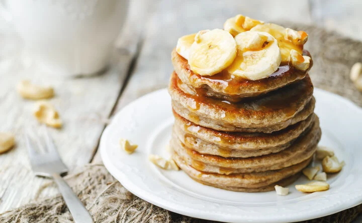
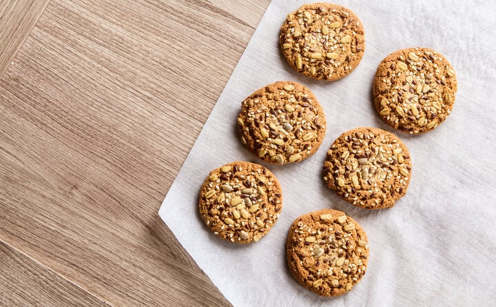
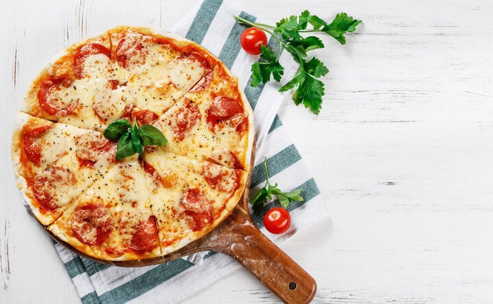

Panqueca de banana
- 1 ovo
- 1 banana
- canela a gosto
Bata o ovo e amasse a banana. Junte a banana ao ovo em uma vasilha e mexa até dar liga. Adicione a canela. Acenda o fogo em temperatura média e adicione o óleo em uma frigideira grande. Com uma concha coloque a massa na frigideira formando círculos e frite dos dois lados.
Biscoito de banana com aveia
- 2 bananas bem maduras
- 1 xícara de aveia
Amasse as bananas e acrescente a aveia, misturando bem. Depois, faça bolinhas no formato de pequenos biscoitos e coloque para assar em uma forma untada por 15 minutos em forno pré-aquecido a 175 graus. Se você quiser, também pode adicionar uma pitada de canela em pó, um punhadinho de frutos secos — como nozes e amêndoas, por exemplo — ou gotinhas de chocolate para incrementar as bolachas.
Massa de Pizza
- 1 xícara de farinha com fermento
- 1 xícara de iogurte Grego ou natural
- Farinha extra para polvilhar
Em uma tigela, misture a farinha e o iogurte; misture a massa até formar uma bola. Coloque a massa em uma superfície enfarinhada e deixe sovar por 5-8 minutos. Com um rolo de macarrão, deixe a massa em formato de pizza e depois adicione as coberturas. Pré-aqueça o forno. Coloque a pizza no forno em temperatura máxima por 12 minutos.